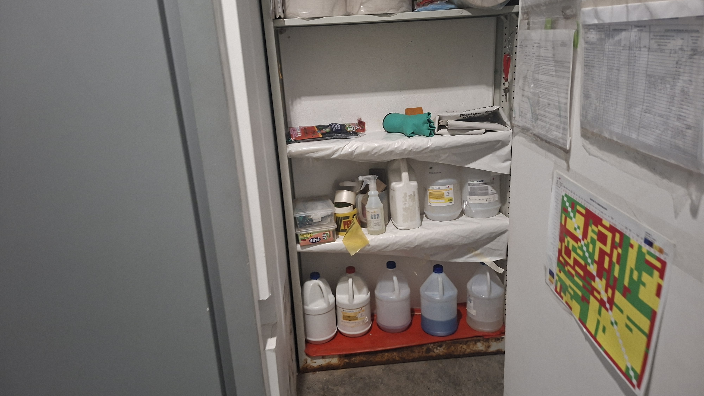

Los testimonios de los empleados y en las cámaras se demostró el uso de diferentes materiales utilizados por el personal para limpiar
con el propósito de eliminar los rastros de sangre y limpiar las evidencias, aunque unos elementos sí quedaron mal limpiados entre ellos la guillotina
desde el tercer piso, los estudiantes y profesores mencionan que en la mañana se veían manchas de color marrón y un olor a carne. Al llamar a la policía
llegaron a la conclusión de que el asesino utilizó la guillotina para poder cortar el cuerpo en pedazos.
